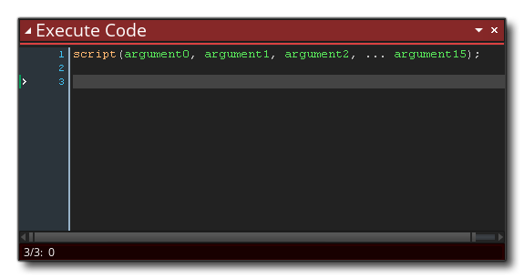
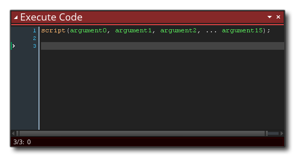
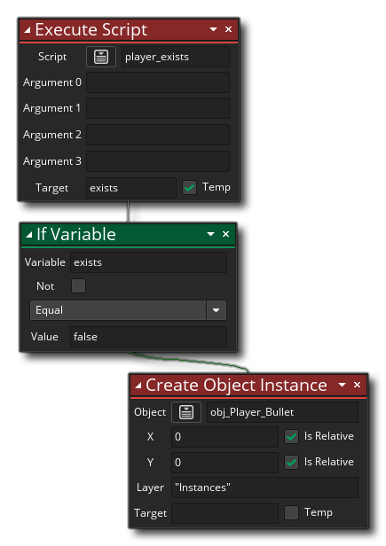

资源树 中有一种资源叫做 脚本（Script）脚本就是一段代码或者拖拽按钮（DnD™）动作，它们可以像 GameMaker Studio 2 的内置函数或动作那样被执行。我们手册里有关于使用代码编写脚本的整个部分（此处），但你也可以仅使用拖放动作来创建脚本。
DnD™ 脚本（与任何内置 DnD™ 动作一样）可以采用不同的值（或根本不执行任何值），然后执行一系列动作并返回值或不返回任何值，你可以使用 执行脚本  调用动作，看起来像这样：
调用动作，看起来像这样： 输入变量称为参数，你可以使用此动作提供最多 4 个参数（尽管你可以使用全部、部分或不使用，具体取决于你对脚本的要求），但你也可以使用 执行代码
输入变量称为参数，你可以使用此动作提供最多 4 个参数（尽管你可以使用全部、部分或不使用，具体取决于你对脚本的要求），但你也可以使用 执行代码  调用脚本，在这种情况下，你的脚本最多可以有 16 个参数（当使用 argument0 ... argument15 变量时）或者需要多个参数（使用 argument[n] 数组时）：
调用脚本，在这种情况下，你的脚本最多可以有 16 个参数（当使用 argument0 ... argument15 变量时）或者需要多个参数（使用 argument[n] 数组时）：
欲创建 DnD™ 脚本，你只需要在脚本资源上右键  并选择 创建（Create）。就会创建一个新的 DnD™ 脚本并打开编辑器窗口：
并选择 创建（Create）。就会创建一个新的 DnD™ 脚本并打开编辑器窗口：
你可以通过在资源树中右键单击  脚本并选择 重命名（或使用慢速双击左键
脚本并选择 重命名（或使用慢速双击左键  ）来命名脚本，但请注意脚本名称 必须 符合函数的脚本规则，因此它们必须以字母开头，并且只包含字母、数字或下划线 “_” 符号。
）来命名脚本，但请注意脚本名称 必须 符合函数的脚本规则，因此它们必须以字母开头，并且只包含字母、数字或下划线 “_” 符号。
如前所述，你可以向一个脚本传递（Pass）一些参数，然后它就会用这些参数来执行你为它所编写的任务。为了更好的理解这件事，举个例子，就拿一个动作然后考虑它是如何工作的……你把它放到事件当中，然后指定了一些参数，然后它就会让你的实例做某些事情。脚本也是如此，唯一的区别就是它们是由 你 所编写的。下图展示了一个简单的 DnD™ 脚本取得了一个参数，然后使用这个参数在房间内随机位置创建一些实例： 
请注意，在开始的时候我们将值 argument0 赋给一个临时变量（Temporay Variable）所有值都被传入脚本，并且被赋给了如下的内置变量：
argument0, argument1, ..., etc... up to argument15
你可以直接访问这些内置的 argument 变量，或者将其赋给临时（局部）变量就像我们在上面范例中所做的那样（使用临时变量会使跟踪每一个参数的行为更加容易，并且这是推荐的做法）。在上面的脚本中，argument0 的值会被用于决定 重复型 循环（repeat）的运行次数，并且你可以像这样调用（Call）脚本： 
你不仅可以向脚本传递参数，你还可以要求脚本返回（Return）一个值（使用返回（Return） 动作），因此你可以使用它们来（举个例子）构建一些计算方法或经过一系列复杂的碰撞检测之后反馈一个实例 ID，又或者是其他的一些东西。然而请注意，使用 return 将会结束该脚本，并且被放置于其后的动作都不再会被执行，并且这也就意味着，你需要考虑你的脚本是如何构造的。
下面是一个返回了值的拖拽按钮脚本：

上述脚本会直接检测房间内所有实例来观察它们的 object_index 是多少并且如果它们当中有一个和玩家相同的时候脚本会返回 true 或 false（并结束脚本）。你可以这样调用此脚本： 因此，我们调用脚本并让它创建一个临时（本地）变量来存储返回的值（在这种情况下为 true 或 false），然后检查此变量并执行动作。
制作 DnD™ 脚本时，可以使用与将动作添加到物体事件时相同的动作，甚至可以从脚本中调用脚本，这样就可以创建更多 “模块化” 的动作代码。 以这种方式构建的脚本可以节省大量时间来创建相同的动作序列，还可以帮助你更轻松地阅读动作序列并更容易调试。